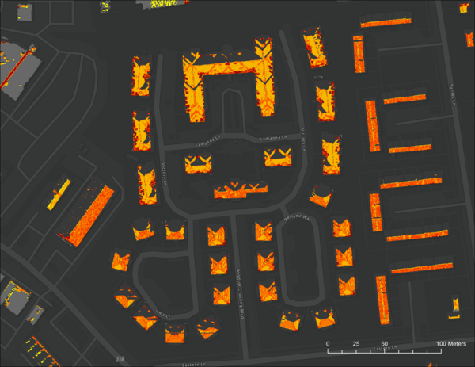

Estimating Solar Potential Using NASA POWER Data to Inform Renewable Energy Policy for Washington, D.C.
Edward Cronin, Ashley Fernando, Jarrett James, Rupa Kurinchi-Vendhan
In line with the Sustainable D.C. 2.0 plan to combat climate change, Washington D.C. aims to decrease its greenhouse gas emissions by 100% by 2050. As solar energy is a clean, renewable energy form, its integration into the region’s power grids lowers energy costs and incentivizes sustainable development. We partnered with the Washington D.C. Department of Energy & Environment (DOEE) to determine how urban areas surrounding D.C. can better be incorporated into decisions regarding renewable energy policy. The team used NASA’s Prediction of Worldwide Energy Resources (POWER) solar data and a Light Detection and Ranging (LiDAR) derived digital surface model, to estimate and visualize rooftop solar potential for Maryland’s Prince George’s and Montgomery counties. POWER provided solar irradiance data adjusted for tilt angle while the digital surface model contributed aspect and slope data. This methodology factored out areas that were unsuitable for solar panel installation while displaying areas that possess a high potential for energy return. The team found the total rooftop solar potential for the study area to be 31,923,583.10 kW, which is equivalent to 660.056 kW per building. The methodology used to generate the solar potential maps has the capacity to be applied to other regions of the country seeking to efficiently utilize solar energy. The end users at the DOEE will be able to use our resulting solar potential map and data table to effectively target buildings that have the highest potential to generate solar energy.
Community Concerns
D.C. must transition to using 100% renewable energy by 2050 in order to reach the goals set by the Sustainable DC 2.0 Plan. Current forms of power generation, like natural gas and petroleum, emit pollutants that impact human health and release greenhouse gases that contribute to global climate change. 96% of D.C.'s greenhouse gas emissions result from energy consumption, 75% of which is caused by powering buildings. Renewable energy sources, such as photovoltaic solar energy, are emissions-free and do not pose respiratory health risks for communities. D.C. can reduce rising greenhouse gas emissions by adding solar panels to buildings, which will advance D.C.'s goals for 100% emissions reduction, and aid residents by lowering annual energy costs. The total solar energy potential for Washington D.C. has been mapped, but mapping efforts have yet to be expanded to neighboring counties which could contribute to the their total emissions and aid in the emissions reduction efforts.
Solar Potential Map
The final solar potential map of the study area displays rooftop areas that have the highest solar potential in dark red while yellow is used to represent roof areas with the lowest potential. The inset map shows a large rooftop in our study area, which displays how solar potential varies by individual roof segment due to the different slope and aspect values as well as the varying levels of solar irradiance. The inset map also shows how North-facing and flat roofs were masked out to be excluded from solar potential calculations.
Results
The team estimated rooftop solar potential by building for the study area, reporting daily values in kilowatt- hours (kWh) for each month of the year, and an annual average. The team calculated a daily total of 17,706,177.50 kWh averaged over a year within our study area. The average amount of daily solar potential averaged over a year per building footprint was derived to be 366.09 kWh. These values were calculated for an area of roughly 45.54 sqMi (117.94 sqKm).